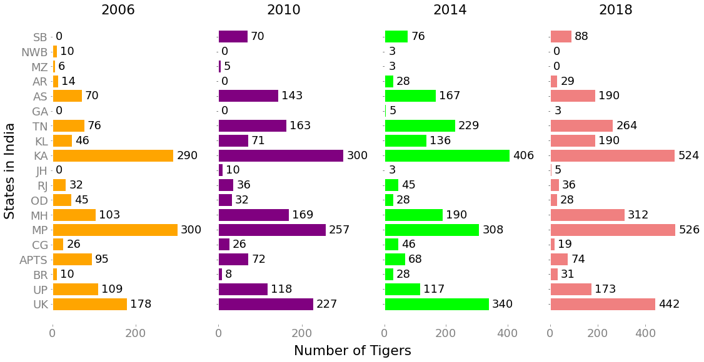

Since the turn of the century, climate change and increasing population have contributed to the endangerment of several wildlife species, but few have been as severely affected as tigers. They have lost over 95% of their historical range, and from over 100000 tigers in the 1900s, we are down to less than 4000 tigers left in the wild presently. That is a 96% drastic decrease. Three subspecies have gone extinct, a fourth mostly extinct in the wild. Although trade in tiger parts is internationally banned, illegal tiger trade still accounts for a big part of a $20 billion/year illegal wildlife market. With their habitat under increasing threat from agricultural developments, deforestation and climate change, it should come as no surprise that confirmed breeding populations exist in only 8 countries worldwide.
However, after a century of decline, overall wild tiger numbers are starting to tick upward. India, that accounts for over 70% of the tiger population, has had major success with their tiger conservation efforts. Project Save Our Tigers, a joint initiative between WCT, NDTV, Aircel and Sanctuary Asia, took off in 2008, and has implemented multiple stages of their conservation program in collaboration with governmental and non-governmental organizations to bring the tiger population in India back from the brink of extinction. This has been just one of several tiger conservation efforts implemented by the country’s central government to save its national animal. The extremely low number of 1411 tigers in 2006 is what spurred the Indian government into action, and based on current data, the tiger population now stands at 2967, more than double of that in 2006. This has been one of India's most successful wildlife conservation projects.
The goal of this project is to visualize the tiger population over the years in India, based on governmental data. These visualizations will include both static and interactive visualizations. The end goal is to use these visualizations to help find out the extent to which these efforts were successful and in addition how they can be improved in the future to safeguard the tiger population.
Hover over the states to see the population. Drop-down option for multiple years is in progress. The legend on the right shows the colorscale used to represent tiger population. Data has been obtained from the Government of India website.
Hover over the states to see the population change as compared to the previous years. Drop-down option for multiple years is in progress. The legend on the right shows the colorscale used to represent increase or decrease in tiger population. Data has been obtained from the Government of India website.
Each bubble shows the tiger population for a particular year in a particular state. Hovering on the bubbles shows the exact number and the year. The purple bubble shows the state with the largest population that year, and the red bubble shows the state with the least. You can select a year from the drop-down menu on the left. Black bubbles are for states with no data for that year. Viewing the graphs for every year shows the clear increase in tiger population over time, showing the positive impact of the conservation effort.
We attempt to show a trend line for every state over a period of 12 years, from 2016-2018. Using state-wise data over the years, we use a stacked line chart to show the change in tiger population over time. States (in different colours for distinguishing) can be selected/deselected from the right side. Hovering on the circle marks on the graph shows the exact population in that year for that state, along with the state name. Viewing the graphs for every state over time can help us see which states are succeeding and which states need to amp up their conservation efforts. Odisha, for instance, has done poorly, with numbers falling from 45 to 28, whereas Madhya Pradesh has done excellently, with tiger numbers rising from 300 to 526. Analysing socio-political and environmental factors that could have caused this can help guide further conservation policies.
This visualization offers a completed overview of tiger populations over 12 years, for 19 Indian states. Looking at the data at one glance, we can see which states have done well, and which states have done poorly. States like Karnataka, the Sunderbans, and Kerala have seen a steady increase in tiger population. This is a positive sign that conservation campaigns are working well in these states. These can thus serve as examples for states like Orissa and Andhra Pradesh, where numbers have fallen. Arunachal Pradesh and Goa have bounced back from zero populations, suggesting bringing new tigers into states for breeding and raising tiger population might be a feasible conservation technique. Thus, seeing this data at a glance helps know where future efforts need to be concentrated, and what different techniques might work best in which states.

Our interactive explainer project aims to raise awareness about tiger conservation efforts. By providing multiple interactive visualization idioms, we hope a wide range of users can benefit and enjoy from the variety of options to interact with the data. Further, based on our data, we hope to find trends and analyse how conservation efforts have fared in several states and regions in India over time and where such efforts might need to be improved. We also hope that analysis of such data helps emphasize the need for conservation data to be more easily available on public forums.
For future work, we would like to perform such analysis on a global scale, and for multiple species. We would also like to combine the analysis of various socio-political and environmental factors with such conservation campaigns that can help provide a better understanding of where efforts need to be concentrated and what policies need to be formulated. We hope such projects raise awareness about wildlife conservation while also helping wildlife organizations, conservationists, and governments analyze and improve their conservation efforts.